Chapter 22: Prokaryotes: Bacteria and Archaea¶
Introduction¶
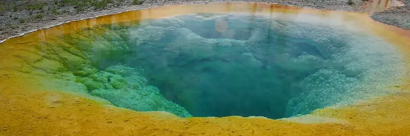
In the recent past, scientists grouped living things into six kingdoms—animalia, plantae, fungi, protista, archea, and bacteria—based on several criteria, such as the absence or presence of a nucleus and other membrane-bound organelles, the absence or presence of cell walls, multicellularity, and so on. In the late 20th century, the pioneering work of Carl Woese and others compared sequences of small-subunit ribosomal RNA (SSU rRNA), which resulted in a more fundamental way to group organisms on Earth. Based on differences in the structure of cell membranes and in rRNA, Woese and his colleagues proposed that all life on Earth evolved along three lineages, called domains. The domain Bacteria comprises all organisms in the kingdom Bacteria, the domain Archaea comprises the rest of the prokaryotes, and the domain Eukarya comprises all eukaryotes—including organisms in the kingdoms Animalia, Plantae, Fungi, and Protista.
Two of the three domains—Bacteria and Archaea—are prokaryotic. Prokaryotes were the first inhabitants on Earth, appearing 3.5 to 3.8 billion years ago. These organisms are abundant and ubiquitous; that is, they are present everywhere. In addition to inhabiting moderate environments, they are found in extreme conditions: from boiling springs to permanently frozen environments in Antarctica; from salty environments like the Dead Sea to environments under tremendous pressure, such as the depths of the ocean; and from areas without oxygen, such as a waste management plant, to radioactively contaminated regions, such as Chernobyl. Prokaryotes reside in the human digestive system and on the skin, are responsible for certain illnesses, and serve an important role in the preparation of many foods.
22.1 Prokaryotic Diversity¶
Learning Objectives
By the end of this section, you will be able to do the following:
- Describe the evolutionary history of prokaryotes
- Discuss the distinguishing features of extremophiles
- Explain why it is difficult to culture prokaryotes
Prokaryotes are ubiquitous. They cover every imaginable surface where there is sufficient moisture, and they also live on and inside virtually all other living things. In the typical human body, prokaryotic cells outnumber human body cells by about ten to one. They comprise the majority of living things in all ecosystems. Some prokaryotes thrive in environments that are inhospitable for most living things. Prokaryotes recycle nutrients—essential substances (such as carbon and nitrogen)—and they drive the evolution of new ecosystems, some of which are natural and others man-made. Prokaryotes have been on Earth since long before multicellular life appeared. Indeed, eukaryotic cells are thought to be the descendants of ancient prokaryotic communities.
Prokaryotes, the First Inhabitants of Earth¶
When and where did cellular life begin? What were the conditions on Earth when life began? We now know that prokaryotes were likely the first forms of cellular life on Earth, and they existed for billions of years before plants and animals appeared. The Earth and its moon are dated at about 4.54 billion years in age. This estimate is based on evidence from radiometric dating of meteorite material together with other substrate material from Earth and the moon. Early Earth had a very different atmosphere (contained less molecular oxygen) than it does today and was subjected to strong solar radiation; thus, the first organisms probably would have flourished where they were more protected, such as in the deep ocean or far beneath the surface of the Earth. Strong volcanic activity was common on Earth at this time, so it is likely that these first organisms—the first prokaryotes—were adapted to very high temperatures. Because early Earth was prone to geological upheaval and volcanic eruption, and was subject to bombardment by mutagenic radiation from the sun, the first organisms were prokaryotes that must have withstood these harsh conditions.
Microbial Mats¶
Microbial mats or large biofilms may represent the earliest forms of prokaryotic life on Earth; there is fossil evidence of their presence starting about 3.5 billion years ago. It is remarkable that cellular life appeared on Earth only a billion years after the Earth itself formed, suggesting that pre-cellular “life” that could replicate itself had evolved much earlier. A microbial mat is a multi-layered sheet of prokaryotes (Figure 22.2) that includes mostly bacteria, but also archaeans. Microbial mats are only a few centimeters thick, and they typically grow where different types of materials interface, mostly on moist surfaces. The various types of prokaryotes that comprise them carry out different metabolic pathways, and that is the reason for their various colors. Prokaryotes in a microbial mat are held together by a glue-like sticky substance that they secrete called extracellular matrix.
The first microbial mats likely obtained their energy from chemicals found near hydrothermal vents. A hydrothermal vent is a breakage or fissure in the Earth’s surface that releases geothermally heated water. With the evolution of photosynthesis about three billion years ago, some prokaryotes in microbial mats came to use a more widely available energy source—sunlight—whereas others were still dependent on chemicals from hydrothermal vents for energy and food.
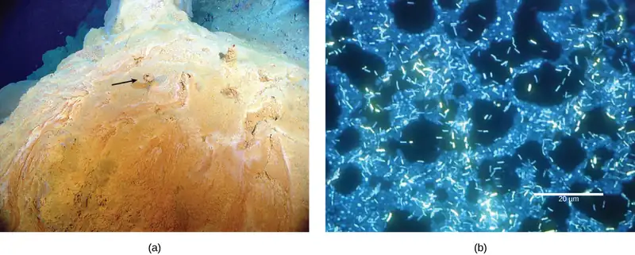
Stromatolites¶
Fossilized microbial mats represent the earliest record of life on Earth. A stromatolite is a sedimentary structure formed when minerals are precipitated out of water by prokaryotes in a microbial mat (Figure 22.3). Stromatolites form layered rocks made of carbonate or silicate. Although most stromatolites are artifacts from the past, there are places on Earth where stromatolites are still forming. For example, growing stromatolites have been found in the Anza-Borrego Desert State Park in San Diego County, California.
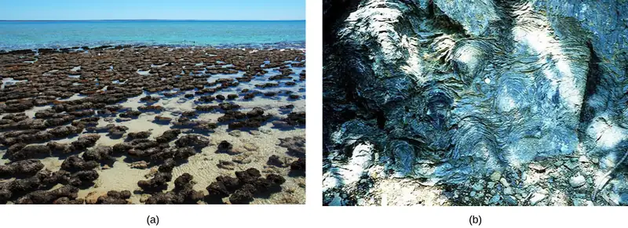
The Ancient Atmosphere¶
Evidence indicates that during the first two billion years of Earth’s existence, the atmosphere was anoxic, meaning that there was no molecular oxygen. Therefore, only those organisms that can grow without oxygen—anaerobic organisms—were able to live. Autotrophic organisms that convert solar energy into chemical energy are called phototrophs, and they appeared within one billion years of the formation of Earth. Then, cyanobacteria, also known as “blue-green algae,” evolved from these simple phototrophs at least one billion years later. It was the ancestral cyanobacteria (Figure 22.4) that began the “oxygenation” of the atmosphere: Increased atmospheric oxygen allowed the evolution of more efficient O2-utilizing catabolic pathways. It also opened up the land to increased colonization, because some O2 is converted into O3 (ozone) and ozone effectively absorbs the ultraviolet light that could have otherwise caused lethal mutations in DNA. The current evidence suggests that the increase in O2 concentrations allowed the evolution of other life forms.
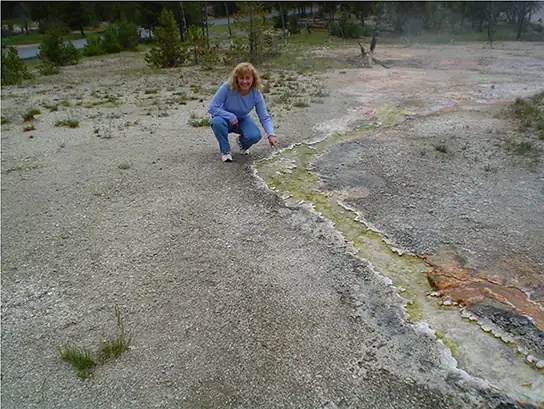
Microbes Are Adaptable: Life in Moderate and Extreme Environments¶
Some organisms have developed strategies that allow them to survive harsh conditions. Almost all prokaryotes have a cell wall, a protective structure that allows them to survive in both hypertonic and hypotonic aqueous conditions. Some soil bacteria are able to form endospores that resist heat and drought, thereby allowing the organism to survive until favorable conditions recur. These adaptations, along with others, allow bacteria to remain the most abundant life form in all terrestrial and aquatic ecosystems.
Prokaryotes thrive in a vast array of environments: Some grow in conditions that would seem very normal to us, whereas others are able to thrive and grow under conditions that would kill a plant or an animal. Bacteria and archaea that are adapted to grow under extreme conditions are called extremophiles, meaning “lovers of extremes.” Extremophiles have been found in all kinds of environments: the depths of the oceans, hot springs, the Arctic and the Antarctic, in very dry places, deep inside Earth, in harsh chemical environments, and in high radiation environments (Figure 22.5), just to mention a few. Because they have specialized adaptations that allow them to live in extreme conditions, many extremophiles cannot survive in moderate environments. There are many different groups of extremophiles: They are identified based on the conditions in which they grow best, and several habitats are extreme in multiple ways. For example, a soda lake is both salty and alkaline, so organisms that live in a soda lake must be both alkaliphiles and halophiles (Table 22.1). Other extremophiles, like radioresistant organisms, do not prefer an extreme environment (in this case, one with high levels of radiation), but have adapted to survive in it (Figure 22.5). Organisms like these give us a better understanding of prokaryotic diversity and open up the possibility of finding new prokaryotic species that may lead to the discovery of new therapeutic drugs or have industrial applications.
Table 22.1
| Extremophiles and Their Preferred Conditions | |
|---|---|
| Extremophile | Conditions for Optimal Growth |
| Acidophiles | pH 3 or below |
| Alkaliphiles | pH 9 or above |
| Thermophiles | Temperature 60–80 °C (140–176 °F) |
| Hyperthermophiles | Temperature 80–122 °C (176–250 °F) |
| Psychrophiles | Temperature of -15-10 °C (5-50 °F) or lower |
| Halophiles | Salt concentration of at least 0.2 M |
| Osmophiles | High sugar concentration |
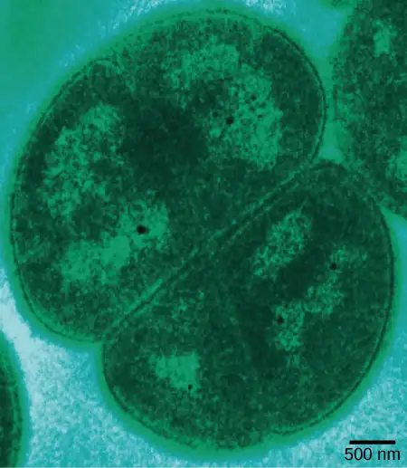
Prokaryotes in the Dead Sea¶
One example of a very harsh environment is the Dead Sea, a hypersaline basin that is located between Jordan and Israel. Hypersaline environments are essentially concentrated seawater. In the Dead Sea, the sodium concentration is 10 times higher than that of seawater, and the water contains high levels of magnesium (about 40 times higher than in seawater) that would be toxic to most living things. Iron, calcium, and magnesium, elements that form divalent ions (Fe2+, Ca2+, and Mg2+), produce what is commonly referred to as “hard” water. Taken together, the high concentration of divalent cations, the acidic pH (6.0), and the intense solar radiation flux make the Dead Sea a unique, and uniquely hostile, ecosystem1 (Figure 22.6).
What sort of prokaryotes do we find in the Dead Sea? The extremely salt-tolerant bacterial mats include Halobacterium, Haloferax volcanii (which is found in other locations, not only the Dead Sea), Halorubrum sodomense, and Halobaculum gomorrense, and the archaean Haloarcula marismortui, among others.
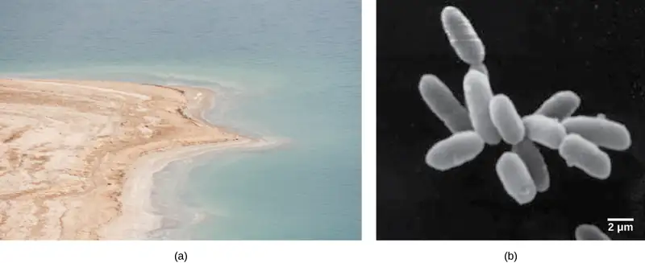
Unculturable Prokaryotes and the Viable-but-Non-Culturable State¶
The process of culturing bacteria is complex and is one of the greatest discoveries of modern science. German physician Robert Koch is credited with discovering the techniques for pure culture, including staining and using growth media. Microbiologists typically grow prokaryotes in the laboratory using an appropriate culture medium containing all the nutrients needed by the target organism. The medium can be liquid, broth, or solid. After an incubation time at the right temperature, there should be evidence of microbial growth (Figure 22.7). Koch's assistant Julius Petri invented the Petri dish, whose use persists in today’s laboratories. Koch worked primarily with the Mycobacterium tuberculosis bacterium that causes tuberculosis and developed guidelines, called Koch's postulates, to identify the organisms responsible for specific diseases. Koch's postulates continue to be widely used in the medical community. Koch’s postulates include that an organism can be identified as the cause of disease when it is present in all infected samples and absent in all healthy samples, and it is able to reproduce the infection after being cultured multiple times. Today, cultures remain a primary diagnostic tool in medicine and other areas of molecular biology.
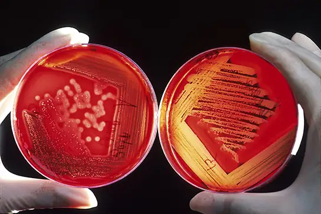
Koch's postulates can be fully applied only to organisms that can be isolated and cultured. Some prokaryotes, however, cannot grow in a laboratory setting. In fact, over 99 percent of bacteria and archaea are unculturable. For the most part, this is due to a lack of knowledge as to what to feed these organisms and how to grow them; they may have special requirements for growth that remain unknown to scientists, such as needing specific micronutrients, pH, temperature, pressure, co-factors, or co-metabolites. Some bacteria cannot be cultured because they are obligate intracellular parasites and cannot be grown outside a host cell.
In other cases, culturable organisms become unculturable under stressful conditions, even though the same organism could be cultured previously. Those organisms that cannot be cultured but are not dead are in a viable-but-non-culturable (VBNC) state. The VBNC state occurs when prokaryotes respond to environmental stressors by entering a dormant state that allows their survival. The criteria for entering into the VBNC state are not completely understood. In a process called resuscitation, the prokaryote can go back to “normal” life when environmental conditions improve.
Is the VBNC state an unusual way of living for prokaryotes? In fact, most of the prokaryotes living in the soil or in oceanic waters are non-culturable. It has been said that only a small fraction, perhaps one percent, of prokaryotes can be cultured under laboratory conditions. If these organisms are non-culturable, then how is it known whether they are present and alive? Microbiologists use molecular techniques, such as the polymerase chain reaction (PCR), to amplify selected portions of DNA of prokaryotes, e.g., 16S rRNA genes, demonstrating their existence. (Recall that PCR can make billions of copies of a DNA segment in a process called amplification.)
The Ecology of Biofilms¶
Some prokaryotes may be unculturable because they require the presence of other prokaryotic species. Until a couple of decades ago, microbiologists used to think of prokaryotes as isolated entities living apart. This model, however, does not reflect the true ecology of prokaryotes, most of which prefer to live in communities where they can interact. As we have seen, a biofilm is a microbial community (Figure 22.8) held together in a gummy-textured matrix that consists primarily of polysaccharides secreted by the organisms, together with some proteins and nucleic acids. Biofilms typically grow attached to surfaces. Some of the best-studied biofilms are composed of prokaryotes, although fungal biofilms have also been described, as well as some composed of a mixture of fungi and bacteria.
Biofilms are present almost everywhere: they can cause the clogging of pipes and readily colonize surfaces in industrial settings. In recent, large-scale outbreaks of bacterial contamination of food, biofilms have played a major role. They also colonize household surfaces, such as kitchen counters, cutting boards, sinks, and toilets, as well as places on the human body, such as the surfaces of our teeth.
Interactions among the organisms that populate a biofilm, together with their protective exopolysaccharidic (EPS) environment, make these communities more robust than free-living, or planktonic, prokaryotes. The sticky substance that holds bacteria together also excludes most antibiotics and disinfectants, making biofilm bacteria hardier than their planktonic counterparts. Overall, biofilms are very difficult to destroy because they are resistant to many common forms of sterilization.
Visual Connection
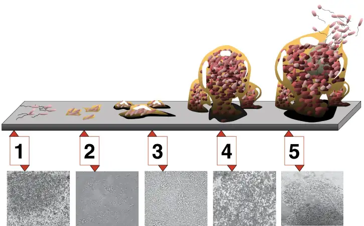
Compared to free-floating bacteria, bacteria in biofilms often show increased resistance to antibiotics and detergents. Why do you think this might be the case?
22.2 Structure of Prokaryotes: Bacteria and Archaea¶
Learning Objectives
By the end of this section, you will be able to do the following:
- Describe the basic structure of a typical prokaryote
- Describe important differences in structure between Archaea and Bacteria
There are many differences between prokaryotic and eukaryotic cells. The name "prokaryote" suggests that prokaryotes are defined by exclusion—they are not eukaryotes, or organisms whose cells contain a nucleus and other internal membrane-bound organelles. However, all cells have four common structures: the plasma membrane, which functions as a barrier for the cell and separates the cell from its environment; the cytoplasm, a complex solution of organic molecules and salts inside the cell; a double-stranded DNA genome, the informational archive of the cell; and ribosomes, where protein synthesis takes place. Prokaryotes come in various shapes, but many fall into three categories: cocci (spherical), bacilli (rod-shaped), and spirilli (spiral-shaped) (Figure 22.9).
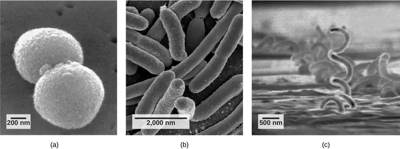
The Prokaryotic Cell¶
Recall that prokaryotes are unicellular organisms that lack membrane-bound organelles or other internal membrane-bound structures (Figure 22.10). Their chromosome—usually single—consists of a piece of circular, double-stranded DNA located in an area of the cell called the nucleoid. Most prokaryotes have a cell wall outside the plasma membrane. The cell wall functions as a protective layer, and it is responsible for the organism’s shape. Some bacterial species have a capsule outside the cell wall. The capsule enables the organism to attach to surfaces, protects it from dehydration and attack by phagocytic cells, and makes pathogens more resistant to our immune responses. Some species also have flagella (singular, flagellum) used for locomotion, and pili (singular, pilus) used for attachment to surfaces including the surfaces of other cells. Plasmids, which consist of extra-chromosomal DNA, are also present in many species of bacteria and archaea.
![In this illustration, the prokaryotic cell is rod shaped. The circular chromosome is concentrated in a region called the nucleoid. The fluid inside the cell is called the cytoplasm. Ribosomes, depicted as small circles, float in the cytoplasm. The cytoplasm is encased by a plasma membrane, which in turn is encased by a cell wall. A capsule surrounds the cell wall. The bacterium depicted has a flagellum protruding from one narrow end. Pili are small protrusions that project from the capsule all over the bacterium, like hair.](img/figure-22-02-02.webp)
Recall that prokaryotes are divided into two different domains, Bacteria and Archaea, which together with Eukarya, comprise the three domains of life (Figure 22.11).
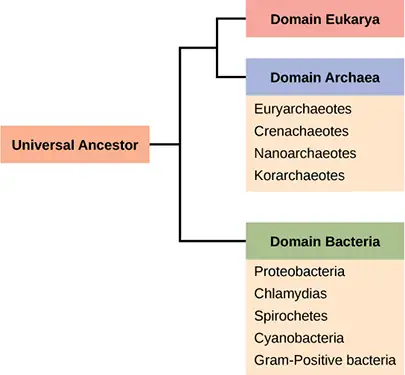
Characteristics of bacterial phyla are described in Figure 22.12 and Figure 22.13. Major bacterial phyla include the Proteobacteria, the Chlamydias, the Spirochaetes, the photosynthetic Cyanobacteria, and the Gram-positive bacteria. The Proteobacteria are in turn subdivided into several classes, from the Alpha- to the Epsilon proteobacteria. Eukaryotic mitochondria are thought to be the descendants of alphaproteobacteria, while eukaryotic chloroplasts are derived from cyanobacteria. Archaeal phyla are described in Figure 22.14.
![Characteristics of the five classes of bacterial phylum proteobacteria are described. The classes are alpha, beta, gamma, delta and epsilon. Most species of Alpha Proteobacteria are photoautotrophic but some are symbionts of plants and animals, and others are pathogens. Eukaryotic mitochondria are thought to be derived from bacteria in this group. Representative organisms include Rhizobium, a nitrogen-fixing endosymbiont associated with the roots of legumes, and Rickettsia, an obligate intracellular parasite that causes typhus and Rocky Mountain Spotted Fever (but not rickets, which is caused by Vitamin D deficiency). A micrograph shows rod-shaped Rickettsia rickettsii inside a much larger eukaryotic cell. Beta Proteobacteria is a diverse group of bacteria. Some species play an important role in the nitrogen cycle. Representative organisms include Nitrosomas, which oxidize ammonia into nitrite, and Spirillum minus, which causes rat bite fever. A micrograph of spiral-shaped Spirillum minus is shown. Gamma Proteobacteria include many beneficial symbionts that populate the human gut, as well as familiar human pathogens. Some species from this subgroup oxidize sulfur compounds. Representative organisms include Escherichia coli, normally a beneficial microbe of the human gut, but some strains cause disease; Salmonella, certain strains of which cause food poisoning or typhoid fever; Yersinia pestis, the causative agent of Bubonic plague; Psuedomonas aeruganosa, which causes lung infections; Vibrio cholera, the causative agent of cholera; and Chromatium, sulfur-producing bacteria that oxidize sulfur, producing H2S. Micrograph shows rod-shaped Vibrio cholera, which are about 1 micron long. Some species of Delta Proteobacteria generate a spore-forming fruiting body in adverse conditions. Others reduce sulfate and sulfur. Representative organisms include Myxobacteria, which generate spore-forming fruiting bodies in adverse conditions, and Desulfovibrio vulgaris, an aneorobic, sulfate-reducing bacterium. Micrograph shows a bent rod-shaped Desulfovibrio vulgaris bacterium with a long flagellum. Epsilon Proteobacteria includes many species that inhabit the digestive tract of animals as symbionts or pathogens. Bacteria from this group have been found in deep-sea hydrothermal vents and cold seep habitats. Representative organisms include Campylobacter, which causes blood poisoning and intestinal inflammation, and Heliobacter pylori, which causes stomach ulcers. Micrograph shows short spiral, or s shaped, Campylobacter bacteria.](img/figure-22-02-04f.webp)
![This table describes the other four bacterial phyla classes. The first phylum described is chlamydias. All members of this group are obligate intracellular parasites of animal cells. Cells walls lack peptidoglycan. Micrograph shows a pap smear of cells infected with Chlamydia trachomatis. Chlamydia infection is the most common sexually transmitted disease and can lead to blindness. All members of the phylum Spirochetes have spiral-shaped cells. Most are free-living anaerobes, but some are pathogenic. Flagella run lengthwise in the periplasmic space between the inner and outer membrane. Representative species include Treponema pallidum, the causative agent of syphilis and Borrelia burgdorferi, the causative agent of Lyme disease Micrograph shows corkscrew-shaped Trepanema pallidum, about 1 micron across. Bacteria in the phylum Cyanobacteria, also known as blue-green algae, obtain their energy through photosynthesis. They are ubiquitous, found in terrestrial, marine, and freshwater environments. Eukaryotic chloroplasts are thought to be derived from bacteria in this group. The cyanobacterium Prochlorococcus is believed to be the most abundant photosynthetic organism on earth, responsible for generating half the world’s oxygen. Micrograph shows a long, thin rod-shaped species called Phormidium. Gram-positive Bacteria have a thick cell wall and lack an outer membrane. Soil-dwelling members of this subgroup decompose organic matter. Some species cause disease. Representative species include Bacillus anthracis, which causes anthrax; Clostridium botulinum, which causes botulism; Clostridium difficile, which causes diarrhea during antibiotic therapy; Streptomyces, from which many antibiotics, including streptomyocin, are derived; and Mycoplasmas, the smallest known bacteria, which lack a cell wall. Some are free-living, and some are pathogenic. Micrograph shows Clostridium difficile, which are rod-shaped and about 3 microns long.](img/figure-b22-02-08b.webp)
![Characteristics of the four phyla of archaea are described. Euryarchaeotes includes methanogens, which produce methane as a metabolic waste product, and halobacteria, which live in an extreme saline environment. Methanogens cause flatulence in humans and other animals. Halobacteria can grow in large blooms that appear reddish, due to the presence of bacteriorhodopsin in the membrane. Bacteriorhodopsin is related to the retinal pigment rhodopsin. Micrograph shows rod shaped Halobacterium. Members of the ubiquitous Crenarchaeotes phylum play an important role in the fixation of carbon. Many members of this group are sulfur dependent extremophiles. Some are thermophilic or hyperthermophilic. Micrograph shows cocci shaped Sulfolobus, a genus which grows in volcanic springs at temperatures between 75 degrees and 80 degrees Celsius and at a lower case p upper case H between 2 and 3. The phylum Nanoarchaeotes currently contains only one species, Nanoarchaeum equitans, which has been isolated from the bottom of the Atlantic Ocean, and from the a hydrothermal vent at Yellowstone National Park. It is an obligate symbiont with Ignicoccus, another species of archaebacteria. Micrograph shows two small, round N. equitans cells attached to a larger Ignicoccus cell. Korarchaeotes are considered to be one of the most primitive forms of life and so far have only been found in the Obsidian Pool, a hot spring at Yellowstone National Park. Micrograph shows a variety of specimens from this group which vary in shape.](img/figure-22-02-06f.webp)
The Plasma Membrane of Prokaryotes¶
The prokaryotic plasma membrane is a thin lipid bilayer (6 to 8 nanometers) that completely surrounds the cell and separates the inside from the outside. Its selectively permeable nature keeps ions, proteins, and other molecules within the cell and prevents them from diffusing into the extracellular environment, while other molecules may move through the membrane. Recall that the general structure of a cell membrane is a phospholipid bilayer composed of two layers of lipid molecules. In archaeal cell membranes, isoprene (phytanyl) chains linked to glycerol replace the fatty acids linked to glycerol in bacterial membranes. Some archaeal membranes are lipid monolayers instead of bilayers (Figure 22.15).
![This illustration compares phospholipids from Bacteria and Eukarya to those from Archaea. In Bacteria and Eukarya, fatty acids are attached to glycerol by an ester linkage, while in Archaea, isoprene chains are linked to glycerol by an ether linkage. In the ester linkage, the first carbon in the fatty acid chain has an oxygen double-bonded to it, whereas in the ether linkage, it does not. In Archaea, the isoprene chains have methyl groups branching off from them, whereas such branches are absent in Bacteria and Eukarya. Both types of phospholipids result in similar lipid bilayers.](img/figure-22-02-07f.webp)
The Cell Wall of Prokaryotes¶
The cytoplasm of prokaryotic cells has a high concentration of dissolved solutes. Therefore, the osmotic pressure within the cell is relatively high. The cell wall is a protective layer that surrounds some cells and gives them shape and rigidity. It is located outside the cell membrane and prevents osmotic lysis (bursting due to increasing volume). The chemical composition of the cell wall varies between Archaea and Bacteria, and also varies between bacterial species.
Bacterial cell walls contain peptidoglycan, composed of polysaccharide chains that are cross-linked by unusual peptides containing both L- and D-amino acids including D-glutamic acid and D-alanine. (Proteins normally have only L-amino acids; as a consequence, many of our antibiotics work by mimicking D-amino acids and therefore have specific effects on bacterial cell-wall development.) There are more than 100 different forms of peptidoglycan. S-layer (surface layer) proteins are also present on the outside of cell walls of both Archaea and Bacteria.
Bacteria are divided into two major groups: Gram positive and Gram negative, based on their reaction to Gram staining. Note that all Gram-positive bacteria belong to two phyla (Firmicutes and Actinobacteria); bacteria in the other phyla (Proteobacteria, Chlamydias, Spirochetes, Cyanobacteria, and others) are Gram-negative. The Gram staining method is named after its inventor, Danish scientist Hans Christian Gram (1853–1938). The different bacterial responses to the staining procedure are ultimately due to cell wall structure. Gram-positive organisms typically lack the outer membrane found in Gram-negative organisms (Figure 22.16). Up to 90 percent of the cell-wall in Gram-positive bacteria is composed of peptidoglycan, and most of the rest is composed of acidic substances called teichoic acids. Teichoic acids may be covalently linked to lipids in the plasma membrane to form lipoteichoic acids. Lipoteichoic acids anchor the cell wall to the cell membrane. Gram-negative bacteria have a relatively thin cell wall composed of a few layers of peptidoglycan (only 10 percent of the total cell wall), surrounded by an outer envelope containing lipopolysaccharides (LPS) and lipoproteins. This outer envelope is sometimes referred to as a second lipid bilayer. The chemistry of this outer envelope is very different, however, from that of the typical lipid bilayer that forms plasma membranes.
Visual Connection
![The left illustration shows the cell wall of Gram-positive bacteria. The cell wall is a thick layer of peptidoglycan that exists outside the plasma membrane. A long, thin molecule called lipoteichoic acid anchors the cell wall to the cell membrane. The right illustration shows Gram-negative bacteria. In Gram-negative bacteria, a thin peptidoglycan cell wall is sandwiched between an outer and an inner plasma membrane. The space between the two membranes is called the periplasmic space. Lipoproteins anchor the cell wall to the outer membrane. Lipopolysaccharides protrude from the outer membrane. Porins are proteins in the outer membrane that allow entry of substances.](img/figure-22-02-08f.webp)
Which of the following statements is true?
- Gram-positive bacteria have a single cell wall anchored to the cell membrane by lipoteichoic acid.
- Porins allow entry of substances into both Gram-positive and Gram-negative bacteria.
- The cell wall of Gram-negative bacteria is thick, and the cell wall of Gram-positive bacteria is thin.
- Gram-negative bacteria have a cell wall made of peptidoglycan, whereas Gram-positive bacteria have a cell wall made of lipoteichoic acid.
Archaean cell walls do not have peptidoglycan. There are four different types of archaean cell walls. One type is composed of pseudopeptidoglycan, which is similar to peptidoglycan in morphology but contains different sugars in the polysaccharide chain. The other three types of cell walls are composed of polysaccharides, glycoproteins, or pure protein. Other differences between Bacteria and Archaea are seen in Table 22.2. Note that features related to DNA replication, transcription and translation in Archaea are similar to those seen in eukaryotes.
Table 22.2
| Differences and Similarities between Bacteria and Archaea | ||
|---|---|---|
| Structural Characteristic | Bacteria | Archaea |
| Cell type | Prokaryotic | Prokaryotic |
| Cell morphology | Variable | Variable |
| Cell wall | Contains peptidoglycan | Does not contain peptidoglycan |
| Cell membrane type | Lipid bilayer | Lipid bilayer or lipid monolayer |
| Plasma membrane lipids | Fatty acids-glycerol ester | Phytanyl-glycerol ethers |
| Chromosome | Typically circular | Typically circular |
| Replication origins | Single | Multiple |
| RNA polymerase | Single | Multiple |
| Initiator tRNA | Formyl-methionine | Methionine |
| Streptomycin inhibition | Sensitive | Resistant |
| Calvin cycle | Yes | No |
Reproduction¶
Reproduction in prokaryotes is asexual and usually takes place by binary fission. (Recall that the DNA of a prokaryote is a single, circular chromosome.) Prokaryotes do not undergo mitosis; instead, the chromosome is replicated and the two resulting copies separate from one another, due to the growth of the cell. The prokaryote, now enlarged, is pinched inward at its equator and the two resulting cells, which are clones, separate. Binary fission does not provide an opportunity for genetic recombination or genetic diversity, but prokaryotes can share genes by three other mechanisms.
In transformation, the prokaryote takes in DNA shed by other prokaryotes into its environment. If a nonpathogenic bacterium takes up DNA for a toxin gene from a pathogen and incorporates the new DNA into its own chromosome, it too may become pathogenic. In transduction, bacteriophages, the viruses that infect bacteria, may move short pieces of chromosomal DNA from one bacterium to another. Transduction results in a recombinant organism. Archaea also have viruses that may translocate genetic material from one individual to another. In conjugation, DNA is transferred from one prokaryote to another by means of a pilus, which brings the organisms into contact with one another, and provides a channel for transfer of DNA. The DNA transferred can be in the form of a plasmid or as a composite molecule, containing both plasmid and chromosomal DNA. These three processes of DNA exchange are shown in Figure 22.17.
Reproduction can be very rapid: a few minutes for some species. This short generation time coupled with mechanisms of genetic recombination and high rates of mutation result in the rapid evolution of prokaryotes, allowing them to respond to environmental changes (such as the introduction of an antibiotic) very quickly.
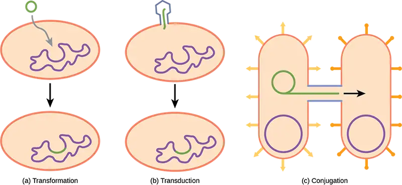
Evolution Connection: The Evolution of Prokaryotes
How do scientists answer questions about the evolution of prokaryotes? Unlike with animals, artifacts in the fossil record of prokaryotes offer very little information. Fossils of ancient prokaryotes look like tiny bubbles in rock. Some scientists turn to genetics and to the principle of the molecular clock, which holds that the more recently two species have diverged, the more similar their genes (and thus proteins) will be. Conversely, species that diverged long ago will have more genes that are dissimilar.
Scientists at the NASA Astrobiology Institute and at the European Molecular Biology Laboratory collaborated to analyze the molecular evolution of 32 specific proteins common to 72 species of prokaryotes.2 The model they derived from their data indicates that three important groups of bacteria—Actinobacteria, Deinococcus, and Cyanobacteria (collectively called Terrabacteria by the authors)—were the first to colonize land. Actinobacteria are a group of very common Gram-positive bacteria that produce branched structures like fungal mycelia, and include species important in decomposition of organic wastes. You will recall that Deinococcus is a genus of bacterium that is highly resistant to ionizing radiation. It has a thick peptidoglycan layer in addition to a second external membrane, so it has features of both Gram-positive and Gram-negative bacteria.
Cyanobacteria are photosynthesizers, and were probably responsible for the production of oxygen on the ancient earth. The timelines of divergence suggest that bacteria (members of the domain Bacteria) diverged from common ancestral species between 2.5 and 3.2 billion years ago, whereas the Archaea diverged earlier: between 3.1 and 4.1 billion years ago. Eukarya later diverged from the archaean line. The work further suggests that stromatolites that formed prior to the advent of cyanobacteria (about 2.6 billion years ago) photosynthesized in an anoxic environment and that because of the modifications of the Terrabacteria for land (resistance to drying and the possession of compounds that protect the organism from excess light), photosynthesis using oxygen may be closely linked to adaptations to survive on land.
22.3 Prokaryotic Metabolism¶
Learning Objectives
By the end of this section, you will be able to do the following:
- Identify the macronutrients needed by prokaryotes, and explain their importance
- Describe the ways in which prokaryotes get energy and carbon for life processes
- Describe the roles of prokaryotes in the carbon and nitrogen cycles
Prokaryotes are metabolically diverse organisms. In many cases, a prokaryote may be placed into a species clade by its defining metabolic features: Can it metabolize lactose? Can it grow on citrate? Does it produce H2S? Does it ferment carbohydrates to produce acid and gas? Can it grow under anaerobic conditions? Since metabolism and metabolites are the product of enzyme pathways, and enzymes are encoded in genes, the metabolic capabilities of a prokaryote are a reflection of its genome. There are many different environments on Earth with various energy and carbon sources, and variable conditions to which prokaryotes may be able to adapt. Prokaryotes have been able to live in every environment from deep-water volcanic vents to Antarctic ice by using whatever energy and carbon sources are available. Prokaryotes fill many niches on Earth, including involvement in nitrogen and carbon cycles, photosynthetic production of oxygen, decomposition of dead organisms, and thriving as parasitic, commensal, or mutualistic organisms inside multicellular organisms, including humans. The very broad range of environments that prokaryotes occupy is possible because they have diverse metabolic processes.
Needs of Prokaryotes¶
The diverse environments and ecosystems on Earth have a wide range of conditions in terms of temperature, available nutrients, acidity, salinity, oxygen availability, and energy sources. Prokaryotes are very well equipped to make their living out of a vast array of nutrients and environmental conditions. To live, prokaryotes need a source of energy, a source of carbon, and some additional nutrients.
Macronutrients¶
Cells are essentially a well-organized assemblage of macromolecules and water. Recall that macromolecules are produced by the polymerization of smaller units called monomers. For cells to build all of the molecules required to sustain life, they need certain substances, collectively called nutrients. When prokaryotes grow in nature, they must obtain their nutrients from the environment. Nutrients that are required in large amounts are called macronutrients, whereas those required in smaller or trace amounts are called micronutrients. Just a handful of elements are considered macronutrients—carbon, hydrogen, oxygen, nitrogen, phosphorus, and sulfur. (A mnemonic for remembering these elements is the acronym CHONPS.)
Why are these macronutrients needed in large amounts? They are the components of organic compounds in cells, including water. Carbon is the major element in all macromolecules: carbohydrates, proteins, nucleic acids, lipids, and many other compounds. Carbon accounts for about 50 percent of the composition of the cell. In contrast, nitrogen represents only 12 percent of the total dry weight of a typical cell. Nitrogen is a component of proteins, nucleic acids, and other cell constituents. Most of the nitrogen available in nature is either atmospheric nitrogen (N2) or another inorganic form. Diatomic (N2) nitrogen, however, can be converted into an organic form only by certain microorganisms, called nitrogen-fixing organisms. Both hydrogen and oxygen are part of many organic compounds and of water. Phosphorus is required by all organisms for the synthesis of nucleotides and phospholipids. Sulfur is part of the structure of some amino acids such as cysteine and methionine, and is also present in several vitamins and coenzymes. Other important macronutrients are potassium (K), magnesium (Mg), calcium (Ca), and sodium (Na). Although these elements are required in smaller amounts, they are very important for the structure and function of the prokaryotic cell.
Micronutrients¶
In addition to these macronutrients, prokaryotes require various metallic elements in small amounts. These are referred to as micronutrients or trace elements. For example, iron is necessary for the function of the cytochromes involved in electron-transport reactions. Some prokaryotes require other elements—such as boron (B), chromium (Cr), and manganese (Mn)—primarily as enzyme cofactors.
The Ways in Which Prokaryotes Obtain Energy¶
Prokaryotes are classified both by the way they obtain energy, and by the carbon source they use for producing organic molecules. These categories are summarized in Table 22.3. Prokaryotes can use different sources of energy to generate the ATP needed for biosynthesis and other cellular activities. Phototrophs (or phototrophic organisms) obtain their energy from sunlight. Phototrophs trap the energy of light using chlorophylls, or in a few cases, bacterial rhodopsin. (Rhodopsin-using phototrophs, oddly, are phototrophic, but not photosynthetic, since they do not fix carbon.) Chemotrophs (or chemosynthetic organisms) obtain their energy from chemical compounds. Chemotrophs that can use organic compounds as energy sources are called chemoorganotrophs. Those that can use inorganic compounds, like sulfur or iron compounds, as energy sources are called chemolithotrophs.
Energy-producing pathways may be either aerobic, using oxygen as the terminal electron acceptor, or anaerobic, using either simple inorganic compounds or organic molecules as the terminal electron acceptor. Since prokaryotes lived on Earth for nearly a billion years before photosynthesis produced significant amounts of oxygen for aerobic respiration, many species of both Bacteria and Archaea are anaerobic and their metabolic activities are important in the carbon and nitrogen cycles discussed below.
The Ways in Which Prokaryotes Obtain Carbon¶
Prokaryotes not only can use different sources of energy, but also different sources of carbon compounds. Autotrophic prokaryotes synthesize organic molecules from carbon dioxide. In contrast, heterotrophic prokaryotes obtain carbon from organic compounds. To make the picture more complex, the terms that describe how prokaryotes obtain energy and carbon can be combined. Thus, photoautotrophs use energy from sunlight, and carbon from carbon dioxide and water, whereas chemoheterotrophs obtain both energy and carbon from an organic chemical source. Chemolithoautotrophs obtain their energy from inorganic compounds, and they build their complex molecules from carbon dioxide. Finally, prokaryotes that get their energy from light, but their carbon from organic compounds, are photoheterotrophs. The table below (Table 22.3) summarizes carbon and energy sources in prokaryotes.
Table 22.3
| Carbon and Energy Sources in Prokaryotes | ||||
|---|---|---|---|---|
| Energy Source | Electron Source | Carbon Source | Nutritional Type | |
| Light (phototroph) |
Organic material (organotroph) |
Organic material (heterotroph) |
Photoorganoheterotroph | |
| Carbon dioxide (autotroph) |
||||
| Inorganic material (lithotroph) |
Organic material (heterotroph) |
|||
| Carbon dioxide (autotroph) |
Photolithoautotroph | |||
| Chemicals (chemotroph) |
Organic material (organotroph) |
Organic material (heterotroph) |
Chemoorganoheterotroph | |
| Carbon dioxide (autotroph) |
||||
| Inorganic material (lithotroph) |
Organic material (heterotroph) |
Chemolithoheterotroph | ||
| Carbon dioxide (autotroph) |
Chemolithoautotroph | |||
Role of Prokaryotes in Ecosystems¶
Prokaryotes are ubiquitous: There is no niche or ecosystem in which they are not present. Prokaryotes play many roles in the environments they occupy. The roles they play in the carbon and nitrogen cycles are vital to life on Earth. In addition, the current scientific consensus suggests that metabolically interactive prokaryotic communities may have been the basis for the emergence of eukaryotic cells.
Prokaryotes and the Carbon Cycle¶
Carbon is one of the most important macronutrients, and prokaryotes play an important role in the carbon cycle (Figure 22.18). The carbon cycle traces the movement of carbon from inorganic to organic compounds and back again. Carbon is cycled through Earth’s major reservoirs: land, the atmosphere, aquatic environments, sediments and rocks, and biomass. In a way, the carbon cycle echoes the role of the “four elements” first proposed by the ancient Greek philosopher, Empedocles: fire, water, earth, and air. Carbon dioxide is removed from the atmosphere by land plants and marine prokaryotes, and is returned to the atmosphere via the respiration of chemoorganotrophic organisms, including prokaryotes, fungi, and animals. Although the largest carbon reservoir in terrestrial ecosystems is in rocks and sediments, that carbon is not readily available.
Participants in the carbon cycle are roughly divided among producers, consumers, and decomposers of organic carbon compounds. The primary producers of organic carbon compounds from CO2 are land plants and photosynthetic bacteria. A large amount of available carbon is found in living land plants. A related source of carbon compounds is humus, which is a mixture of organic materials from dead plants and prokaryotes that have resisted decomposition. (The term "humus," by the way, is the root of the word "human.") Consumers such as animals and other heterotrophs use organic compounds generated by producers and release carbon dioxide to the atmosphere. Other bacteria and fungi, collectively called decomposers, carry out the breakdown (decomposition) of plants and animals and their organic compounds. Most carbon dioxide in the atmosphere is derived from the respiration of microorganisms that decompose dead animals, plants, and humus.
In aqueous environments and their anoxic sediments, there is another carbon cycle taking place. In this case, the cycle is based on one-carbon compounds. In anoxic sediments, prokaryotes, mostly archaea, produce methane (CH4). This methane moves into the zone above the sediment, which is richer in oxygen and supports bacteria called methane oxidizers that oxidize methane to carbon dioxide, which then returns to the atmosphere.
![An illustration shows the carbon lifecycle. Carbon dioxide in the atmosphere occurs by way of volcanic eruptions, animal, microbial and marine respiration, and human emissions - such as from factories. It is absorbed by terrestrial photosynthesis from plants, and marine photosynthesis. The weathering of terrestrial rocks turns into soil carbon, which then branches into either fossil carbon or directly to microbial respiration and decomposition. Fossil carbon also contributes to microbial respiration and decomposition. This decomposition has a leaching, or runoff effect, and enters the ocean as sediments. Those sediments can be uplifted and also end up contributing to microbial respiration and decomposition.](img/figure-b22-03-01.webp)
Prokaryotes and the Nitrogen Cycle¶
Nitrogen is a very important element for life because it is a major constituent of proteins and nucleic acids. It is a macronutrient, and in nature, it is recycled from organic compounds to ammonia, ammonium ions, nitrate, nitrite, and nitrogen gas by many processes, many of which are carried out only by prokaryotes. As illustrated in Figure 22.19, prokaryotes are key to the nitrogen cycle. The largest pool of nitrogen available in the terrestrial ecosystem is gaseous nitrogen (N2) from the air, but this nitrogen is not usable by plants, which are primary producers. Gaseous nitrogen is transformed, or “fixed” into more readily available forms, such as ammonia (NH3), through the process of nitrogen fixation. Nitrogen-fixing bacteria include Azotobacter in soil and the ubiquitous photosynthetic cyanobacteria. Some nitrogen fixing bacteria, like Rhizobium, live in symbiotic relationships in the roots of legumes. Another source of ammonia is ammonification, the process by which ammonia is released during the decomposition of nitrogen-containing organic compounds. The ammonium ion is progressively oxidized by different species of bacteria in a process called nitrification. The nitrification process begins with the conversion of ammonium to nitrite (NO2-), and continues with the conversion of nitrite to nitrate. Nitrification in soils is carried out by bacteria belonging to the genera Nitrosomas, Nitrobacter, and Nitrospira. Most nitrogen in soil is in the form of ammonium (NH4+) or nitrate (NO3-). Ammonia and nitrate can be used by plants or converted to other forms.
Ammonia released into the atmosphere, however, represents only 15 percent of the total nitrogen released; the rest is as N2 and N2O (nitrous oxide). Ammonia is catabolized anaerobically by some prokaryotes, yielding N2 as the final product. Denitrifying bacteria reverse the process of nitrification, reducing the nitrate from soils to gaseous compounds such as N2O, NO, and N2.
Visual Connection
![This illustration shows the role of bacteria in the nitrogen cycle. Nitrogen-fixing bacteria in root nodules of legumes convert nitrogen gas, or upper case N 2, into organic nitrogen found in plants. Nitrogen-fixing soil bacteria produce ammonium ion, or upper N upper H 4 plus sign. Decomposers, including bacteria and fungi, decompose organic matter, also releasing upper N upper H 4 plus sign. Nitrification is the process by which nitrifying bacteria produce nitrites, shown as upper N upper O 2 negative, and nitrates, shown as upper N upper O 3 negative. Nitrates are assimilated by plants, then animals, then decomposers. Denitrifying bacteria convert nitrates to nitrogen gas, completing the cycle.](img/figure-b22-03-02.webp)
Which of the following statements about the nitrogen cycle is false?
- Nitrogen-fixing bacteria exist on the root nodules of legumes and in the soil.
- Denitrifying bacteria convert nitrates (NO3-) into nitrogen gas (N2).
- Ammonification is the process by which ammonium ion (NH4+) is released from decomposing organic compounds.
- Nitrification is the process by which nitrites (NO2-) are converted to ammonium ion (NH4+).
22.4 Bacterial Diseases in Humans¶
Learning Objectives
By the end of this section, you will be able to do the following:
- Identify bacterial diseases that caused historically important plagues and epidemics
- Describe the link between biofilms and foodborne diseases
- Explain how overuse of antibiotics may be creating “super bugs”
- Explain the importance of MRSA with respect to the problems of antibiotic resistance
To a prokaryote, humans may be just another housing opportunity. Unfortunately, the tenancy of some species can have harmful effects and cause disease. Bacteria or other infectious agents that cause harm to their human hosts are called pathogens. Devastating pathogen-borne diseases and plagues, both viral and bacterial in nature, have affected humans and their ancestors for millions of years. The true cause of these diseases was not understood until modern scientific thought developed, and many people thought that diseases were a “spiritual punishment.” Only within the past several centuries have people understood that staying away from afflicted persons, disposing of the corpses and personal belongings of victims of illness, and sanitation practices reduced their own chances of getting sick.
Epidemiologists study how diseases are transmitted and how they affect a population. Often, they must following the course of an epidemic—a disease that occurs in an unusually high number of individuals in a population at the same time. In contrast, a pandemic is a widespread, and usually worldwide, epidemic. An endemic disease is a disease that is always present, usually at low incidence, in a population.
Long History of Bacterial Disease¶
There are records about infectious diseases as far back as 3000 B.C. A number of significant pandemics caused by bacteria have been documented over several hundred years. Some of the most memorable pandemics led to the decline of cities and entire nations.
In the 21st century, infectious diseases remain among the leading causes of death worldwide, despite advances made in medical research and treatments in recent decades. A disease spreads when the pathogen that causes it is passed from one person to another. For a pathogen to cause disease, it must be able to reproduce in the host’s body and damage the host in some way.
The Plague of Athens¶
In 430 B.C., the Plague of Athens killed one-quarter of the Athenian troops who were fighting in the great Peloponnesian War and weakened Athens’s dominance and power. The plague impacted people living in overcrowded Athens as well as troops aboard ships that had to return to Athens. The source of the plague may have been identified recently when researchers from the University of Athens were able to use DNA from teeth recovered from a mass grave. The scientists identified nucleotide sequences from a pathogenic bacterium, Salmonella enterica serovar Typhi (Figure 22.20), which causes typhoid fever.3 This disease is commonly seen in overcrowded areas and has caused epidemics throughout recorded history.
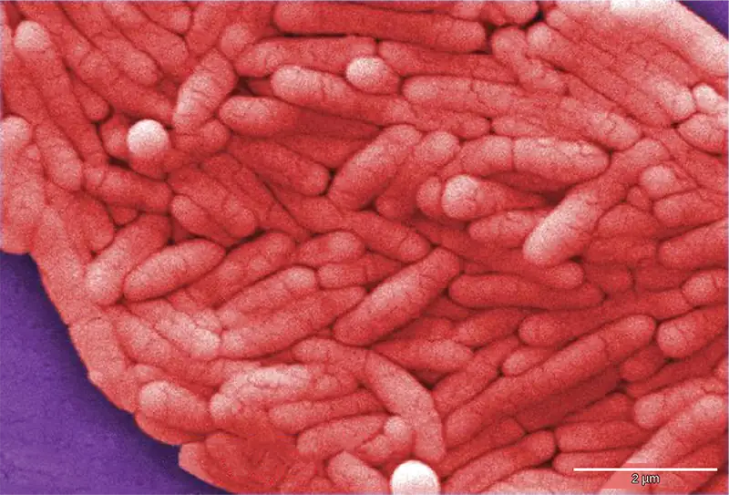
Bubonic Plagues¶
From 541 to 750, the Plague of Justinian, an outbreak of what was likely bubonic plague, eliminated one-quarter to one-half of the human population in the eastern Mediterranean region. The population in Europe dropped by 50 percent during this outbreak. Astoundingly, bubonic plague would strike Europe more than once!
Bubonic plague is caused by the bacterium Yersinia pestis. One of the most devastating pandemics attributed to bubonic plague was the Black Death (1346 to 1361). It is thought to have originated in China and spread along the Silk Road, a network of land and sea trade routes, to the Mediterranean region and Europe, carried by fleas living on black rats that were always present on ships. The Black Death was probably named for the tissue necrosis (Figure 22.21c) that can be one of the symptoms. The "buboes" of bubonic plague were painfully swollen areas of lymphatic tissue. A pneumonic form of the plague, spread by the coughing and sneezing of infected individuals, spreads directly from human to human and can cause death within a week. The pneumonic form was responsible for the rapid spread of the Black Death in Europe. The Black Death reduced the world’s population from an estimated 450 million to about 350 to 375 million. Bubonic plague struck London yet again in the mid-1600s (Figure 22.21). In modern times, approximately 1,000 to 3,000 cases of plague arise globally each year, and a “sylvatic” form of plague, carried by fleas living on rodents such as prairie dogs and black footed ferrets, infects 10 to 20 people annually in the American Southwest. Although contracting bubonic plague before antibiotics meant almost certain death, the bacterium responds to several types of modern antibiotics, and mortality rates from plague are now very low.
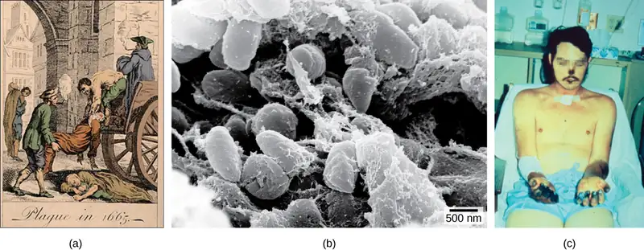
Interactive
Watch a video on the modern understanding of the Black Death—bubonic plague in Europe during the 14th century.
Migration of Diseases to New Populations¶
One of the negative consequences of human exploration was the accidental “biological warfare” that resulted from the transport of a pathogen into a population that had not previously been exposed to it. Over the centuries, Europeans tended to develop genetic immunity to endemic infectious diseases, but when European conquerors reached the western hemisphere, they brought with them disease-causing bacteria and viruses, which triggered epidemics that completely devastated many diverse populations of Native Americans, who had no natural resistance to many European diseases. It has been estimated that up to 90 percent of Native Americans died from infectious diseases after the arrival of Europeans, making conquest of the New World a foregone conclusion.
Emerging and Re-emerging Diseases¶
The distribution of a particular disease is dynamic. Changes in the environment, the pathogen, or the host population can dramatically impact the spread of a disease. According to the World Health Organization (WHO), an emerging disease (Figure 22.22) is one that has appeared in a population for the first time, or that may have existed previously but is rapidly increasing in incidence or geographic range. This definition also includes re-emerging diseases that were previously under control. Approximately 75 percent of recently emerging infectious diseases affecting humans are zoonotic diseases. Zoonoses are diseases that primarily infect animals but can be transmitted to humans; some are of viral origin and some are of bacterial origin. Brucellosis is an example of a prokaryotic zoonosis that is re-emerging in some regions, and necrotizing fasciitis (commonly known as flesh-eating bacteria) has been increasing in virulence for the last 80 years for unknown reasons.
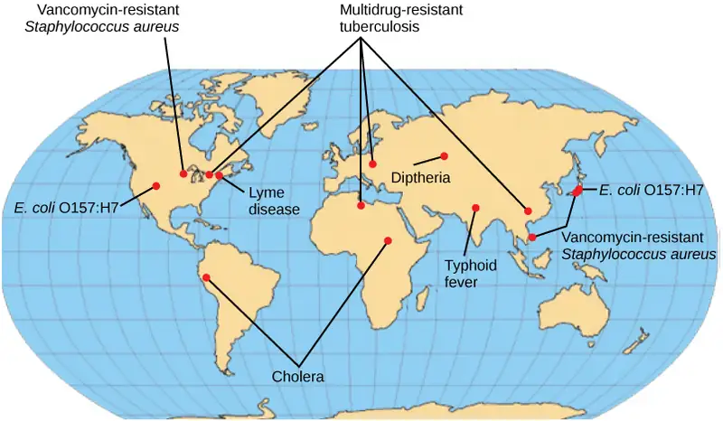
Some of the present emerging diseases are not actually new, but are diseases that were catastrophic in the past (Figure 22.23). They devastated populations and became dormant for a while, just to come back, sometimes more virulent than before, as was the case with bubonic plague. Other diseases, like tuberculosis, were never eradicated but were under control in some regions of the world until coming back, mostly in urban centers with high concentrations of immunocompromised people. WHO has identified certain diseases whose worldwide re-emergence should be monitored. Among these are three viral diseases (dengue fever, yellow fever, and zika), and three bacterial diseases (diphtheria, cholera, and bubonic plague). The war against infectious diseases has no foreseeable end.
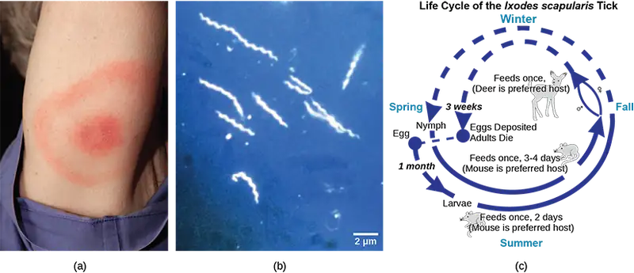
Foodborne Diseases¶
Prokaryotes are everywhere: They readily colonize the surface of any type of material, and food is not an exception. Most of the time, prokaryotes colonize food and food-processing equipment in the form of a biofilm, as we have discussed earlier. Outbreaks of bacterial infection related to food consumption are common. A foodborne disease (commonly called “food poisoning”) is an illness resulting from the consumption the pathogenic bacteria, viruses, or other parasites that contaminate food. Although the United States has one of the safest food supplies in the world, the U.S. Centers for Disease Control and Prevention (CDC) has reported that “76 million people get sick, more than 300,000 are hospitalized, and 5,000 Americans die each year from foodborne illness.”
The characteristics of foodborne illnesses have changed over time. In the past, it was relatively common to hear about sporadic cases of botulism, the potentially fatal disease produced by a toxin from the anaerobic bacterium Clostridium botulinum. Some of the most common sources for this bacterium were non-acidic canned foods, homemade pickles, and processed meat and sausages. The can, jar, or package created a suitable anaerobic environment where Clostridium could grow. Proper sterilization and canning procedures have reduced the incidence of this disease.
While people may tend to think of foodborne illnesses as associated with animal-based foods, most cases are now linked to produce. There have been serious, produce-related outbreaks associated with raw spinach in the United States and with vegetable sprouts in Germany, and these types of outbreaks have become more common. The raw spinach outbreak in 2006 was produced by the bacterium E. coli serotype O157:H7. A serotype is a strain of bacteria that carries a set of similar antigens on its cell surface, and there are often many different serotypes of a bacterial species. Most E. coli are not particularly dangerous to humans, but serotype O157:H7 can cause bloody diarrhea and is potentially fatal.
All types of food can potentially be contaminated with bacteria. Recent outbreaks of Salmonella reported by the CDC occurred in foods as diverse as peanut butter, alfalfa sprouts, and eggs. A deadly outbreak in Germany in 2010 was caused by E. coli contamination of vegetable sprouts (Figure 22.24). The strain that caused the outbreak was found to be a new serotype not previously involved in other outbreaks, which indicates that E. coli is continuously evolving. Outbreaks of listeriosis, due to contamination of meats, raw cheeses, and frozen or fresh vegetables with Listeria monocytogenes, are becoming more frequent.
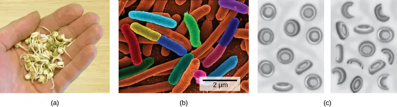
Biofilms and Disease¶
Recall that biofilms are microbial communities that are very difficult to destroy. They are responsible for diseases such as Legionnaires’ disease, otitis media (ear infections), and various infections in patients with cystic fibrosis. They produce dental plaque and colonize catheters, prostheses, transcutaneous and orthopedic devices, contact lenses, and internal devices such as pacemakers. They also form in open wounds and burned tissue. In healthcare environments, biofilms grow on hemodialysis machines, mechanical ventilators, shunts, and other medical equipment. In fact, 65 percent of all infections acquired in the hospital (nosocomial infections) are attributed to biofilms. Biofilms are also related to diseases contracted from food because they colonize the surfaces of vegetable leaves and meat, as well as food-processing equipment that isn’t adequately cleaned.
Biofilm infections develop gradually and may not cause immediate symptoms. They are rarely resolved by host defense mechanisms. Once an infection by a biofilm is established, it is very difficult to eradicate, because biofilms tend to be resistant to most methods used to control microbial growth, including antibiotics. The matrix that attaches the cells to a substrate and to other another protects the cells from antibiotics or drugs. In addition, since biofilms grow slowly, they are less responsive to agents that interfere with cell growth. It has been reported that biofilms can resist up to 1,000 times the antibiotic concentrations used to kill the same bacteria when they are free-living or planktonic. An antibiotic dose that large would harm the patient; therefore, scientists are working on new ways to get rid of biofilms.
Antibiotics: Are We Facing a Crisis?¶
The word antibiotic comes from the Greek anti meaning “against” and bios meaning “life.” An antibiotic is a chemical, produced either by microbes or synthetically, that is hostile to or prevents the growth of other organisms. Today’s media often address concerns about an antibiotic crisis. Are the antibiotics that easily treated bacterial infections in the past becoming obsolete? Are there new “superbugs”—bacteria that have evolved to become more resistant to our arsenal of antibiotics? Is this the beginning of the end of antibiotics? All these questions challenge the healthcare community.
One of the main causes of antibiotic resistance in bacteria is overexposure to antibiotics. The imprudent and excessive use of antibiotics has resulted in the natural selection of resistant forms of bacteria. The antibiotic kills most of the infecting bacteria, and therefore only the resistant forms remain. These resistant forms reproduce, resulting in an increase in the proportion of resistant forms over non-resistant ones. In addition to transmission of resistance genes to progeny, lateral transfer of resistance genes on plasmids can rapidly spread these genes through a bacterial population. A major misuse of antibiotics is in patients with viral infections like colds or the flu, against which antibiotics are useless. Another problem is the excessive use of antibiotics in livestock. The routine use of antibiotics in animal feed promotes bacterial resistance as well. In the United States, 70 percent of the antibiotics produced are fed to animals. These antibiotics are given to livestock in low doses, which maximize the probability of resistance developing, and these resistant bacteria are readily transferred to humans.
Interactive
Watch a recent news report on the problem of routine antibiotic administration to livestock and antibiotic-resistant bacteria.
One of the Superbugs: MRSA¶
The imprudent use of antibiotics has paved the way for the expansion of resistant bacterial populations. For example, Staphylococcus aureus, often called “staph,” is a common bacterium that can live in the human body and is usually easily treated with antibiotics. However, a very dangerous strain, methicillin-resistant Staphylococcus aureus (MRSA) has made the news over the past few years (Figure 22.25). This strain is resistant to many commonly used antibiotics, including methicillin, amoxicillin, penicillin, and oxacillin. MRSA can cause infections of the skin, but it can also infect the bloodstream, lungs, urinary tract, or sites of injury. While MRSA infections are common among people in healthcare facilities, they have also appeared in healthy people who haven’t been hospitalized, but who live or work in tight populations (like military personnel and prisoners). Researchers have expressed concern about the way this latter source of MRSA targets a much younger population than those residing in care facilities. The Journal of the American Medical Association reported that, among MRSA-afflicted persons in healthcare facilities, the average age is 68, whereas people with “community-associated MRSA” (CA-MRSA) have an average age of 23.4
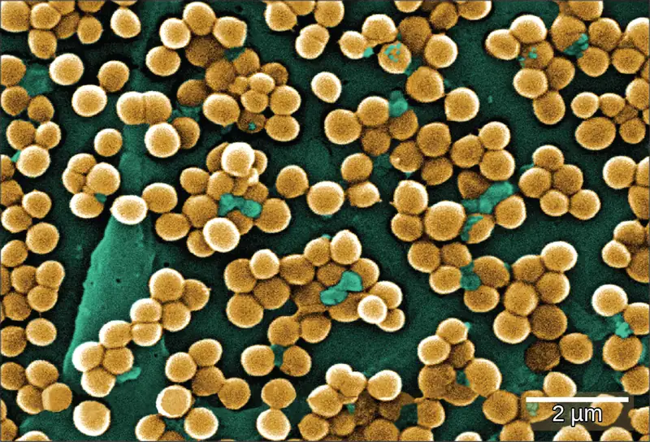
In summary, the medical community is facing an antibiotic crisis. Some scientists believe that after years of being protected from bacterial infections by antibiotics, we may be returning to a time in which a simple bacterial infection could again devastate the human population. Researchers are developing new antibiotics, but it takes many years of research and clinical trials, plus financial investments in the millions of dollars, to generate an effective and approved drug.
Career Connection: Epidemiologist
Epidemiology is the study of the occurrence, distribution, and determinants of health and disease in a population. It is, therefore, part of public health. An epidemiologist studies the frequency and distribution of diseases within human populations and environments.
Epidemiologists collect data about a particular disease and track its spread to identify the original mode of transmission. They sometimes work in close collaboration with historians to try to understand the way a disease evolved geographically and over time, tracking the natural history of pathogens. They gather information from clinical records, patient interviews, surveillance, and any other available means. That information is used to develop strategies, such as vaccinations (Figure 22.26), and design public health policies to reduce the incidence of a disease or to prevent its spread. Epidemiologists also conduct rapid investigations in case of an outbreak to recommend immediate measures to control it.
An epidemiologist has a bachelor’s degree, plus a master’s degree in public health (MPH). Many epidemiologists are also physicians (and have an M.D. or D.O degree), or they have a Ph.D. in an associated field, such as biology or microbiology.
Section Summary¶
Some prokaryotes are human pathogens. Devastating diseases and plagues have been among us since early times and remain among the leading causes of death worldwide. Emerging diseases are those rapidly increasing in incidence or geographic range. They can be new or re-emerging diseases (previously under control). Many emerging diseases affecting humans originate in animals (zoonoses), such as brucellosis. A group of re-emerging bacterial diseases recently identified by WHO for monitoring include bubonic plague, diphtheria, and cholera. Foodborne diseases result from the consumption of food contaminated with food, pathogenic bacteria, viruses, or parasites.
Some bacterial infections have been associated with biofilms: Legionnaires’ disease, otitis media, and infection of patients with cystic fibrosis. Biofilms can grow on human tissues, like dental plaque; colonize medical devices; and cause infection or produce foodborne disease by growing on the surfaces of food and food-processing equipment. Biofilms are resistant to most of the methods used to control microbial growth. The excessive use of antibiotics has resulted in a major global problem, since resistant forms of bacteria have been selected over time. A very dangerous strain, methicillin-resistant Staphylococcus aureus (MRSA), has wreaked havoc recently across the world.
22.5 Beneficial Prokaryotes¶
Learning Objectives
By the end of this section, you will be able to do the following:
- Explain the need for nitrogen fixation and how it is accomplished
- Describe the beneficial effects of bacteria that colonize our skin and digestive tracts
- Identify prokaryotes used during the processing of food
- Describe the use of prokaryotes in bioremediation
Fortunately, only a few species of prokaryotes are pathogenic! Prokaryotes also interact with humans and other organisms in a number of ways that are beneficial. For example, prokaryotes are major participants in the carbon and nitrogen cycles. They produce or process nutrients in the digestive tracts of humans and other animals. Prokaryotes are used in the production of some human foods, and also have been recruited for the degradation of hazardous materials. In fact, our life would not be possible without prokaryotes!
Cooperation between Bacteria and Eukaryotes: Nitrogen Fixation¶
Nitrogen is a very important element to living things, because it is part of nucleotides and amino acids that are the building blocks of nucleic acids and proteins, respectively. Nitrogen is usually the most limiting element in terrestrial ecosystems, with atmospheric nitrogen, N2, providing the largest pool of available nitrogen. However, eukaryotes cannot use atmospheric, gaseous nitrogen to synthesize macromolecules. Fortunately, nitrogen can be “fixed,” meaning it is converted into a more accessible form—ammonia (NH3)—either biologically or abiotically.
Abiotic nitrogen fixation occurs as a result of physical processes such as lightning or by industrial processes. Biological nitrogen fixation (BNF) is exclusively carried out by prokaryotes: soil bacteria, cyanobacteria, and Frankia spp. (filamentous bacteria interacting with actinorhizal plants such as alder, bayberry, and sweet fern). After photosynthesis, BNF is the most important biological process on Earth. The overall nitrogen fixation equation below represents a series of redox reactions (Pi stands for inorganic phosphate).
The total fixed nitrogen through BNF is about 100 to 180 million metric tons per year, which contributes about 65 percent of the nitrogen used in agriculture.
Cyanobacteria are the most important nitrogen fixers in aquatic environments. In soil, members of the genera Clostridium and Azotobacter are examples of free-living, nitrogen-fixing bacteria. Other bacteria live symbiotically with legume plants, providing the most important source of fixed nitrogen. Symbionts may fix more nitrogen in soils than free-living organisms by a factor of 10. Soil bacteria, collectively called rhizobia, are able to symbiotically interact with legumes to form nodules, specialized structures where nitrogen fixation occurs (Figure 22.27). Nitrogenase, the enzyme that fixes nitrogen, is inactivated by oxygen, so the nodule provides an oxygen-free area for nitrogen fixation to take place. The oxygen is sequestered by a form of plant hemoglobin called leghemoglobin, which protects the nitrogenase, but releases enough oxygen to support respiratory activity.
Symbiotic nitrogen fixation provides a natural and inexpensive plant fertilizer: It reduces atmospheric nitrogen to ammonia, which is easily usable by plants. The use of legumes is an excellent alternative to chemical fertilization and is of special interest to sustainable agriculture, which seeks to minimize the use of chemicals and conserve natural resources. Through symbiotic nitrogen fixation, the plant benefits from using an endless source of nitrogen: the atmosphere. The bacteria benefit from using photosynthates (carbohydrates produced during photosynthesis) from the plant and having a protected niche. In addition, the soil benefits from being naturally fertilized. Therefore, the use of rhizobia as biofertilizers is a sustainable practice.
Why are legumes so important? Some, like soybeans, are key sources of agricultural protein. Some of the most important legumes consumed by humans are soybeans, peanuts, peas, chickpeas, and beans. Other legumes, such as alfalfa, are used to feed cattle.
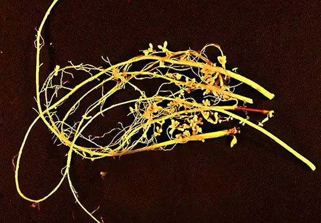
Everyday Connection: Microbes on the Human Body
The commensal bacteria that inhabit our skin and gastrointestinal tract do a host of good things for us. They protect us from pathogens, help us digest our food, and produce some of our vitamins and other nutrients. These activities have been known for a long time. More recently, scientists have gathered evidence that these bacteria may also help regulate our moods, influence our activity levels, and even help control weight by affecting our food choices and absorption patterns. The Human Microbiome Project has begun the process of cataloging our normal bacteria (and archaea) so we can better understand these functions.
A particularly fascinating example of our normal flora relates to our digestive systems. People who take high doses of antibiotics tend to lose many of their normal gut bacteria, allowing a naturally antibiotic-resistant species called Clostridium difficile to overgrow and cause severe gastric problems, especially chronic diarrhea (Figure 22.28). Obviously, trying to treat this problem with antibiotics only makes it worse. However, it has been successfully treated by giving the patients fecal transplants from healthy donors to reestablish the normal intestinal microbial community. Clinical trials are underway to ensure the safety and effectiveness of this technique.
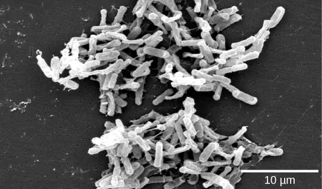
Scientists are also discovering that the absence of certain key microbes from our intestinal tract may set us up for a variety of problems. This seems to be particularly true regarding the appropriate functioning of the immune system. There are intriguing findings that suggest that the absence of these microbes is an important contributor to the development of allergies and some autoimmune disorders. Research is currently underway to test whether adding certain microbes to our internal ecosystem may help in the treatment of these problems, as well as in treating some forms of autism.
Early Biotechnology: Cheese, Bread, Wine, Beer, and Yogurt¶
According to the United Nations Convention on Biological Diversity, biotechnology is “any technological application that uses biological systems, living organisms, or derivatives thereof, to make or modify products or processes for specific use."5 The concept of “specific use” involves some sort of commercial application. Genetic engineering, artificial selection, antibiotic production, and cell culture are current topics of study in biotechnology and will be described in later chapters. However, humans were using prokaryotes before the term biotechnology was even coined. Some of the products of this early biotechnology as familiar as cheese and yogurt employ bacteria, while other microbes, such as yeast, a fungus (Figure 22.29), are used to produce bread, wine, and beer.
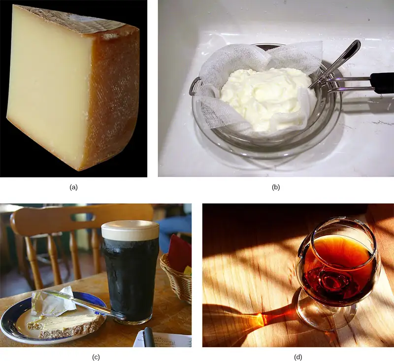
Cheese production began around 4,000 to 7,000 years ago when humans began to breed animals and process their milk. Fermentation in this case preserves nutrients: Milk will spoil relatively quickly, but when processed as cheese, it is more stable. As for beer, the oldest records of brewing are about 6,000 years old and were an integral part of the Sumerian culture. Evidence indicates that the Sumerians discovered fermentation by chance. Wine has been produced for about 4,500 years, and evidence suggests that cultured milk products, like yogurt, have existed for at least 4,000 years.
Using Prokaryotes to Clean up Our Planet: Bioremediation¶
Microbial bioremediation is the use of prokaryotes (or microbial metabolism) to remove pollutants. Bioremediation has been used to remove agricultural chemicals (e.g., pesticides, fertilizers) that leach from soil into groundwater and the subsurface. Certain toxic metals and oxides, such as selenium and arsenic compounds, can also be removed from water by bioremediation. The reduction of SeO4-2 to SeO3-2 and to Se0 (metallic selenium) is a method used to remove selenium ions from water. Mercury (Hg) is an example of a toxic metal that can be removed from an environment by bioremediation. As an active ingredient of some pesticides, mercury is used in industry and is also a by-product of certain processes, such as battery production. Methyl mercury is usually present in very low concentrations in natural environments, but it is highly toxic because it accumulates in living tissues. Several species of bacteria can carry out the biotransformation of toxic mercury into nontoxic forms. These bacteria, such as Pseudomonas aeruginosa, can convert Hg+2 into Hg0, which is nontoxic to humans.
One of the most useful and interesting examples of the use of prokaryotes for bioremediation purposes is the cleanup of oil spills. The significance of prokaryotes to petroleum bioremediation has been demonstrated in several oil spills in recent years, such as the Exxon Valdez spill in Alaska (1989) (Figure 22.30), the Prestige oil spill in Spain (2002), the spill into the Mediterranean from a Lebanon power plant (2006), and more recently, the BP oil spill in the Gulf of Mexico (2010). In the case of oil spills in the ocean, ongoing natural bioremediation tends to occur, since there are oil-consuming bacteria in the ocean prior to the spill. In addition to these naturally occurring oil-degrading bacteria, humans select and engineer bacteria that possess the same capability with increased efficacy and spectrum of hydrocarbon compounds that can be processed. Bioremediation is enhanced by the addition of inorganic nutrients that help bacteria to grow.
Some hydrocarbon-degrading bacteria feed on hydrocarbons in the oil droplet, breaking down the hydrocarbons into smaller subunits. Some species, such as Alcanivorax borkumensis, produce surfactants that solubilize the oil (making it soluble in water), whereas other bacteria degrade the oil into carbon dioxide. Under ideal conditions, it has been reported that up to 80 percent of the nonvolatile components in oil can be degraded within one year of the spill. Other oil fractions containing aromatic and highly branched hydrocarbon chains are more difficult to remove and remain in the environment for longer periods of time.
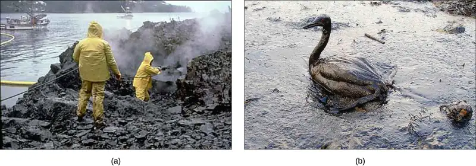
Chapter Review¶
Key Terms¶
- acidophile
- organism with optimal growth pH of three or below
- aerobic
- organisms that use oxygen
- alkaliphile
- organism with optimal growth pH of nine or above
- ammonification
- process by which ammonia is released during the decomposition of nitrogen-containing organic compounds
- anaerobic
- refers to organisms that grow without oxygen
- anoxic
- without oxygen
- antibiotic
- biological substance that, in low concentration, is antagonistic to the growth of prokaryotes
- autotroph
- organism that produces organic molecules from small inorganic compounds
- biofilm
- microbial community that is held together by a gummy-textured matrix
- biological nitrogen fixation
- conversion of atmospheric nitrogen into ammonia exclusively carried out by prokaryotes
- bioremediation
- use of microbial metabolism to remove pollutants
- biotechnology
- any technological application that uses living organisms, biological systems, or their derivatives to produce or modify other products
- Black Death
- devastating pandemic that is believed to have been an outbreak of bubonic plague caused by the bacterium Yersinia pestis
- botulism
- disease produced by the toxin of the anaerobic bacterium Clostridium botulinum
- CA-MRSA
- MRSA acquired in the community rather than in a hospital
- capsule
- external structure that enables a prokaryote to attach to surfaces and protects it from dehydration
- chemotroph
- organism that obtains energy from chemical compounds
- conjugation
- process by which prokaryotes move DNA from one individual to another using a pilus
- cyanobacteria
- bacteria that evolved from early phototrophs and oxygenated the atmosphere; also known as blue-green algae
- decomposer
- organism that carries out the decomposition of dead organisms
- denitrification
- transformation of nitrate from soil to gaseous nitrogen compounds such as N2O, NO, and N2
- emerging disease
- disease making an initial appearance in a population or that is increasing in incidence or geographic range
- endemic disease
- disease that is constantly present, usually at low incidence, in a population
- epidemic
- disease that occurs in an unusually high number of individuals in a population at the same time
- extremophile
- organism that grows under extreme or harsh conditions
- foodborne disease
- any illness resulting from the consumption of contaminated food, or of the pathogenic bacteria, viruses, or other parasites that contaminate food
- Gram negative
- bacterium whose cell wall contains little peptidoglycan but has an outer membrane
- Gram positive
- bacterium that contains mainly peptidoglycan in its cell walls
- halophile
- organism that require a salt concentration of at least 0.2 M
- heterotroph
- organism that obtains energy from organic molecules
- hydrothermal vent
- fissure in Earth’s surface that releases geothermally heated water
- hyperthermophile
- organism that grows at temperatures between 80–122 °C
- microbial mat
- multi-layered sheet of prokaryotes that may include bacteria and archaea
- MRSA
- (methicillin-resistant Staphylococcus aureus) very dangerous Staphylococcus aureus strain resistant to multiple antibiotics
- nitrification
- conversion of ammonium into nitrite and nitrate in soils
- nitrogen fixation
- process by which gaseous nitrogen is transformed, or “fixed” into more readily available forms such as ammonia
- nodule
- novel structure on the roots of certain plants (legumes) that results from the symbiotic interaction between the plant and soil bacteria, and is the site of nitrogen fixation
- nutrient
- essential substances for growth, such as carbon and nitrogen
- osmophile
- organism that grows in a high sugar concentration
- pandemic
- widespread, usually worldwide, epidemic disease
- peptidoglycan
- material composed of polysaccharide chains cross-linked to unusual peptides
- phototroph
- organism that is able to make its own food by converting solar energy to chemical energy
- pilus
- surface appendage of some prokaryotes used for attachment to surfaces including other prokaryotes
- pseudopeptidoglycan
- component of archaea cell walls that is similar to peptidoglycan in morphology but contains different sugars
- psychrophile
- organism that grows at temperatures of -15 °C or lower
- radioresistant
- organism that grows in high levels of radiation
- resuscitation
- process by which prokaryotes that are in the VBNC state return to viability
- S-layer
- surface-layer protein present on the outside of cell walls of archaea and bacteria
- serotype
- strain of bacterium that carries a set of similar antigens on its cell surface, often many in a bacterial species
- stromatolite
- layered sedimentary structure formed by precipitation of minerals by prokaryotes in microbial mats
- teichoic acid
- polymer associated with the cell wall of Gram-positive bacteria
- thermophile
- organism that lives at temperatures between 60–80 °C
- transduction
- process by which a bacteriophage moves DNA from one prokaryote to another
- transformation
- process by which a prokaryote takes in DNA found in its environment that is shed by other prokaryotes
- viable-but-non-culturable (VBNC) state
- survival mechanism of bacteria facing environmental stress conditions
- zoonosis
- disease that primarily infects animals that is transmitted to humans
Summary¶
22.1 Prokaryotic Diversity¶
Prokaryotes existed for billions of years before plants and animals appeared. Hot springs and hydrothermal vents may have been the environments in which life began. Microbial mats are thought to represent the earliest forms of life on Earth. A microbial mat is a multi-layered sheet of prokaryotes that grows at interfaces between different types of material, mostly on moist surfaces. Fossilized microbial mats are called stromatolites and consist of laminated organo-sedimentary structures formed by precipitation of minerals by prokaryotes. They represent the earliest fossil record of life on Earth.
During the first two billion years, the atmosphere was anoxic and only anaerobic organisms were able to live. Cyanobacteria evolved from early phototrophs and began the oxygenation o the atmosphere. The increase in oxygen concentration allowed the evolution of other life forms.
Bacteria and archaea grow in virtually every environment. Those that survive under extreme conditions are called extremophiles (extreme lovers). Some prokaryotes cannot grow in a laboratory setting, but they are not dead. They are in the viable-but-non-culturable (VBNC) state. The VBNC state occurs when prokaryotes enter a dormant state in response to environmental stressors. Most prokaryotes are colonial and prefer to live in communities where interactions take place. A biofilm is a microbial community held together in a gummy-textured matrix.
22.2 Structure of Prokaryotes: Bacteria and Archaea¶
Prokaryotes (domains Archaea and Bacteria) are single-celled organisms that lack a nucleus. They have a single piece of circular DNA in the nucleoid area of the cell. Most prokaryotes have a cell wall that lies outside the boundary of the plasma membrane. Some prokaryotes may have additional structures such as a capsule, flagella, and pili. Bacteria and Archaea differ in the lipid composition of their cell membranes and the characteristics of the cell wall. In archaeal membranes, phytanyl units, rather than fatty acids, are linked to glycerol. Some archaeal membranes are lipid monolayers instead of bilayers.
The cell wall is located outside the cell membrane and prevents osmotic lysis. The chemical composition of cell walls varies between species. Bacterial cell walls contain peptidoglycan. Archaean cell walls do not have peptidoglycan, but they may have pseudopeptidoglycan, polysaccharides, glycoproteins, or protein-based cell walls. Bacteria can be divided into two major groups: Gram positive and Gram negative, based on the Gram stain reaction. Gram-positive organisms have a thick peptidoglycan layer fortified with teichoic acids. Gram-negative organisms have a thin cell wall and an outer envelope containing lipopolysaccharides and lipoproteins.
Prokaryotes can transfer DNA from one cell to another by three mechanisms: transformation (uptake of environmental DNA), transduction (transfer of genomic DNA via viruses), and conjugation (transfer of DNA by direct cell contact).
22.3 Prokaryotic Metabolism¶
As the oldest living inhabitants of Earth, prokaryotes are also the most metabolically diverse; they flourish in many different environments with various energy and carbon sources, variable temperature, pH, pressure, oxygen and water availability. Nutrients required in large amounts are called macronutrients, whereas those required in trace amounts are called micronutrients or trace elements. Macronutrients include C, H, O, N, P, S, K, Mg, Ca, and Na. In addition to these macronutrients, prokaryotes require various metallic elements for growth and enzyme function. Prokaryotes use different sources of energy to assemble macromolecules from smaller molecules. Phototrophs obtain their energy from sunlight, whereas chemotrophs obtain energy from chemical compounds. Energy-producing pathways may be either aerobic or anaerobic.
Prokaryotes play roles in the carbon and nitrogen cycles. Producers capture carbon dioxide from the atmosphere and convert it to organic compounds. Consumers (animals and other chemoorganotrophic organisms) use organic compounds generated by producers and release carbon dioxide into the atmosphere by respiration. Carbon dioxide is also returned to the atmosphere by the microbial decomposers of dead organisms. Nitrogen also cycles in and out of living organisms, from organic compounds to ammonia, ammonium ions, nitrite, nitrate, and nitrogen gas. Prokaryotes are essential for most of these conversions. Gaseous nitrogen is transformed into ammonia through nitrogen fixation. Ammonia is anaerobically catabolized by some prokaryotes, yielding N2 as the final product. Nitrification is the conversion of ammonium into nitrite. Nitrification in soils is carried out by bacteria. Denitrification is also performed by bacteria and transforms nitrate from soils into gaseous nitrogen compounds, such as N2O, NO, and N2.
22.5 Beneficial Prokaryotes¶
Pathogens are only a small percentage of all prokaryotes. In fact, prokaryotes provide essential services to humans and other organisms. Nitrogen, which is not usable by eukaryotes in its plentiful atmospheric form, can be “fixed,” or converted into ammonia (NH3) either biologically or abiotically. Biological nitrogen fixation (BNF) is exclusively carried out by prokaryotes, and constitutes the second most important biological process on Earth. Although some terrestrial nitrogen is fixed by free-living bacteria, most BNF comes from the symbiotic interaction between soil rhizobia and the roots of legume plants.
Human life is only possible due to the action of microbes, both those in the environment and those species that call us home. Internally, they help us digest our food, produce vital nutrients for us, protect us from pathogenic microbes, and help train our immune systems to function properly.
Microbial bioremediation is the use of microbial metabolism to remove pollutants. Bioremediation has been used to remove agricultural chemicals that leach from soil into groundwater and the subsurface. Toxic metals and oxides, such as selenium and arsenic compounds, can also be removed by bioremediation. Probably one of the most useful and interesting examples of the use of prokaryotes for bioremediation purposes is the cleanup of oil spills.
Visual Connection Questions¶
22.1 Prokaryotic Diversity¶
1. Figure 22.8 Compared to free-floating bacteria, bacteria in biofilms often show increased resistance to antibiotics and detergents. Why do you think this might be the case?
Answer
Figure 22.8 The extracellular matrix and outer layer of cells protects the inner bacteria. The close proximity of cells also facilitates lateral gene transfer, a process by which genes such as antibiotic-resistance genes are transferred from one bacterium to another. And even if lateral gene transfer does not occur, one bacterium that produces an exo-enzyme that destroys antibiotic may save neighboring bacteria.
22.2 Structure of Prokaryotes: Bacteria and Archaea¶
2. Figure 22.16 Which of the following statements is true?
- Gram-positive bacteria have a single cell wall anchored to the cell membrane by lipoteichoic acid.
- Porins allow entry of substances into both Gram-positive and Gram-negative bacteria.
- The cell wall of Gram-negative bacteria is thick, and the cell wall of Gram-positive bacteria is thin.
- Gram-negative bacteria have a cell wall made of peptidoglycan, whereas Gram-positive bacteria have a cell wall made of lipoteichoic acid.
Answer
22.3 Prokaryotic Metabolism¶
3. Figure 22.19 Which of the following statements about the nitrogen cycle is false?
- Nitrogen fixing bacteria exist on the root nodules of legumes and in the soil.
- Denitrifying bacteria convert nitrates (NO3-) into nitrogen gas (N2).
- Ammonification is the process by which ammonium ion (NH4+) is released from decomposing organic compounds.
- Nitrification is the process by which nitrites (NO2-) are converted to ammonium ion (NH4+).
Answer
Review Questions¶
22.1 Prokaryotic Diversity¶
4. The first forms of life on Earth were thought to be_________.
- single-celled plants
- prokaryotes
- insects
- large animals such as dinosaurs
Answer
B
5. Microbial mats __________.
- are the earliest forms of life on Earth
- obtained their energy and food from hydrothermal vents
- are multi-layered sheets of prokaryotes including mostly bacteria but also archaea
- all of the above
Answer
D
6. The first organisms that oxygenated the atmosphere were
- cyanobacteria
- phototrophic organisms
- anaerobic organisms
- all of the above
Answer
A
7. Halophiles are organisms that require________.
- a salt concentration of at least 0.2 M
- high sugar concentration
- the addition of halogens
- all of the above
Answer
A
8. Many of the first prokaryotes to be cultured in a scientific lab were human or animal pathogens. Why would these species be more readily cultured than non-pathogenic prokaryotes?
- Pathogenic prokaryotes are hardier than non-pathogenic prokaryotes.
- Non-pathogenic prokaryotes require more supplements in their growth media.
- Most of the necessary culture conditions could be inferred for pathogenic prokaryotes.
- Pathogenic bacteria can grow as free bacteria, but non-pathogenic bacteria only grow as parts of large colonies.
Answer
C
22.2 Structure of Prokaryotes: Bacteria and Archaea¶
9. The presence of a membrane-enclosed nucleus is a characteristic of ________.
- prokaryotic cells
- eukaryotic cells
- all cells
- viruses
Answer
B
10. Which of the following consist of prokaryotic cells?
- bacteria and fungi
- archaea and fungi
- protists and animals
- bacteria and archaea
Answer
D
11. The cell wall is ________.
- interior to the cell membrane
- exterior to the cell membrane
- a part of the cell membrane
- interior or exterior, depending on the particular cell
Answer
B
12. Organisms most likely to be found in extreme environments are ________.
- fungi
- bacteria
- viruses
- archaea
Answer
D
13. Prokaryotes stain as Gram-positive or Gram-negative because of differences in the cell _______.
- wall
- cytoplasm
- nucleus
- chromosome
Answer
A
14. Pseudopeptidoglycan is a characteristic of the walls of ________.
- eukaryotic cells
- bacterial prokaryotic cells
- archaean prokaryotic cells
- bacterial and archaean prokaryotic cells
Answer
C
15. The lipopolysaccharide layer (LPS) is a characteristic of the wall of ________.
- archaean cells
- Gram-negative bacteria
- bacterial prokaryotic cells
- eukaryotic cells
Answer
B
22.3 Prokaryotic Metabolism¶
16. Which of the following elements is not a micronutrient?
- boron
- calcium
- chromium
- manganese
Answer
B
17. Prokaryotes that obtain their energy from chemical compounds are called _____.
- phototrophs
- auxotrophs
- chemotrophs
- lithotrophs
Answer
C
18. Ammonification is the process by which _____.
- ammonia is released during the decomposition of nitrogen-containing organic compounds
- ammonium is converted to nitrite and nitrate in soils
- nitrate from soil is transformed to gaseous nitrogen compounds such as NO, N2O, and N2
- gaseous nitrogen is fixed to yield ammonia
Answer
A
19. Plants use carbon dioxide from the air and are therefore called _____.
- consumers
- producers
- decomposer
- carbon fixers
Answer
B
20. Cyanobacteria harness energy from the sun through photosynthesis, and oxidize water to provide electrons for energy generation. Thus, we classify cyanobacteria as _________.
- photolithotrophs
- photoautotrophs
- chemolithoautotrophs
- chemo-organotrophs
Answer
A
22.4 Bacterial Diseases in Humans¶
21. A disease that is constantly present in a population is called _____.
- pandemic
- epidemic
- endemic
- re-emerging
Answer
C
22. Which of the statements about biofilms is correct?
- Biofilms are considered responsible for diseases such as cystic fibrosis.
- Biofilms produce dental plaque, and colonize catheters and prostheses.
- Biofilms colonize open wounds and burned tissue.
- All statements are correct.
Answer
D
23. Which of these statements is true?
- An antibiotic is any substance produced by an organism that is antagonistic to the growth of prokaryotes.
- An antibiotic is any substance produced by a prokaryote that is antagonistic to the growth of other viruses.
- An antibiotic is any substance produced by a prokaryote that is antagonistic to the growth of eukaryotic cells.
- An antibiotic is any substance produced by a prokaryote that prevents growth of the same prokaryote.
Answer
A
24. A person in England arrives at a medical clinic with a fever and swollen lymph nodes shortly after returning from a visit to New Mexico. For which bacteria should the doctor test the patient?
- Salmonella enterica
- Borrelia burgdorferi
- Clostridium botulinum
- Yersinia pestis
Answer
D
25. MRSA has emerged as a serious infectious disease, with the first case of methicillin-resistant S. aureus being detected in 1961. Why are medical professionals so concerned when antibiotics exist that can kill MRSA?
- MRSA can transfer methicillin-resistance to other bacteria.
- Patients are not treated with correct antibiotics rapidly enough to prevent serious illness.
- MRSA could acquire additional antibiotic resistance genes from other bacteria to become a “super bug.”
- All of the above.
Answer
D
22.5 Beneficial Prokaryotes¶
26. Which of these occurs through symbiotic nitrogen fixation?
- The plant benefits from using an endless source of nitrogen.
- The soil benefits from being naturally fertilized.
- Bacteria benefit from using photosynthates from the plant.
- All of the above occur.
Answer
D
27. Synthetic compounds found in an organism but not normally produced or expected to be present in that organism are called _____.
- pesticides
- bioremediators
- recalcitrant compounds
- xenobiotics
Answer
D
28. Bioremediation includes _____.
- the use of prokaryotes that can fix nitrogen
- the use of prokaryotes to clean up pollutants
- the use of prokaryotes as natural fertilizers
- All of the above
Answer
B
29. In addition to providing yogurt with its unique flavor and texture, lactic acid-producing bacteria also provide which additional benefit during food production?
- Providing xenobiotics
- Lowering the pH to kill pathogenic bacteria
- Pasteurizing milk products
- Breaking down lactose for lactose-intolerant individuals
Answer
B
Critical Thinking Questions¶
22.1 Prokaryotic Diversity¶
30. Describe briefly how you would detect the presence of a non-culturable prokaryote in an environmental sample.
Answer
As the organisms are non-culturable, the presence could be detected through molecular techniques, such as PCR.
31. Why do scientists believe that the first organisms on Earth were extremophiles?
Answer
Because the environmental conditions on Earth were extreme: high temperatures, lack of oxygen, high radiation, and the like.
32. A new bacterial species is discovered and classified as an endolith, an extremophile that lives inside rock. If the bacteria were discovered in the permafrost of Antarctica, describe two extremophile features the bacteria must possess.
Answer
Possible answers include:
- Psychrophile
- Hypolith – survival in low humidity/water environment
22.2 Structure of Prokaryotes: Bacteria and Archaea¶
33. Mention three differences between bacteria and archaea.
Answer
Responses will vary. A possible answer is: Bacteria contain peptidoglycan in the cell wall; archaea do not. The cell membrane in bacteria is a lipid bilayer; in archaea, it can be a lipid bilayer or a monolayer. Bacteria contain fatty acids on the cell membrane, whereas archaea contain phytanyl.
34. Explain the statement that both types, bacteria and archaea, have the same basic structures, but built from different chemical components.
Answer
Both bacteria and archaea have cell membranes and they both contain a hydrophobic portion. In the case of bacteria, it is a fatty acid; in the case of archaea, it is a hydrocarbon (phytanyl). Both bacteria and archaea have a cell wall that protects them. In the case of bacteria, it is composed of peptidoglycan, whereas in the case of archaea, it is pseudopeptidoglycan, polysaccharides, glycoproteins, or pure protein. Bacterial and archaeal flagella also differ in their chemical structure.
35. A scientist isolates a new species of prokaryote. They note that the specimen is a bacillus with a lipid bilayer and cell wall that stains positive for peptidoglycan. Its circular chromosome replicates from a single origin of replication. Is the specimen most likely an Archaea, a Gram-positive bacterium, or a Gram-negative bacterium? How do you know?
Answer
The specimen is most likely a gram-positive bacterium. Since the cell wall contains peptidoglycan and the chromosome has one origin of replication, we can conclude that the specimen is in the Domain Bacteria. Since the gram stain detects peptidoglycan, the prokaryote is a gram-positive bacterium.
22.3 Prokaryotic Metabolism¶
36. Think about the conditions (temperature, light, pressure, and organic and inorganic materials) that you may find in a deep-sea hydrothermal vent. What type of prokaryotes, in terms of their metabolic needs (autotrophs, phototrophs, chemotrophs, etc.), would you expect to find there?
Answer
Responses will vary. In a deep-sea hydrothermal vent, there is no light, so prokaryotes would be chemotrophs instead of phototrophs. The source of carbon would be carbon dioxide dissolved in the ocean, so they would be autotrophs. There is not a lot of organic material in the ocean, so prokaryotes would probably use inorganic sources, thus they would be chemolitotrophs. The temperatures are very high in the hydrothermal vent, so the prokaryotes would be thermophilic.
37. Farmers continually rotate the crops grown in different fields to maintain nutrients in the soil. How would planting soybeans in a field the year after the field was used to grow carrots help maintain nitrogen in the soil?
Answer
Soybeans are members of the legume family, so their roots have nodules that are colonized by nitrogen-fixing bacteria (ex. Rhizobium). Planting a crop that promotes nitrogen fixation after growing a crop that depletes nitrogen from the soil ensures that the soil continues to contain sufficient nutrients to grow more crops in the future.
38. Imagine a region of soil became contaminated, killing bacteria that decompose dead plants and animals. How would this effect the carbon cycle in the area? Be specific in stating where carbon would accumulate in the cycle.
Answer
Losing the bacteria that serve as decomposers in the ecosystem would disrupt the carbon cycle, but not stop it completely since fungi can also serve as decomposers. Without bacterial decomposers functioning, organic waste would accumulate in the area, and less carbon dioxide would be released back into the atmosphere.
22.4 Bacterial Diseases in Humans¶
39. Explain the reason why the imprudent and excessive use of antibiotics has resulted in a major global problem.
Answer
Antibiotics kill bacteria that are sensitive to them; thus, only the resistant ones will survive. These resistant bacteria will reproduce, and therefore, after a while, there will be only resistant bacteria.
40. Researchers have discovered that washing spinach with water several times does not prevent foodborne diseases due to E. coli. How can you explain this fact?
Answer
E. coli colonizes the surface of the leaf, forming a biofilm that is more difficult to remove than free (planktonic) cells. Additionally, bacteria can be taken up in the water that plants are grown in, thereby entering the plant tissues rather than simply residing on the leaf surface.
22.5 Beneficial Prokaryotes¶
41. Your friend believes that prokaryotes are always detrimental and pathogenic. How would you explain to them that they are wrong?
Answer
Remind them of the important roles prokaryotes play in decomposition and freeing up nutrients in biogeochemical cycles; remind them of the many prokaryotes that are not human pathogens and that fill very specialized niches. Furthermore, our normal bacterial symbionts are crucial for our digestion and in protecting us from pathogens.
42. Many people use antimicrobial soap to kill bacteria on their hands. However, overuse may actually increase the risk of infection. How could this occur?
Answer
Soap indiscriminately kills bacteria on skin. This kills harmful bacteria, but can also eliminate “good” bacteria from the skin. When the non-pathogenic bacteria are eliminated, pathogenic bacteria can colonize the empty surface.
Adapted from Biology 2e by OpenStax, licensed under CC BY 4.0. Access the original for free at openstax.org. Changes: converted to the web reading format of The Open Book Project.
-
Bodaker, I, Itai, S, Suzuki, MT, Feingersch, R, Rosenberg, M, Maguire, ME, Shimshon, B, and others. Comparative community genomics in the Dead Sea: An increasingly extreme environment. The ISME Journal 4 (2010): 399–407, doi:10.1038/ismej.2009.141. published online 24 December 2009. ↩
-
Battistuzzi, FU, Feijao, A, and Hedges, SB. A genomic timescale of prokaryote evolution: Insights into the origin of methanogenesis, phototrophy, and the colonization of land. BioMed Central: Evolutionary Biology 4 (2004): 44, doi:10.1186/1471-2148-4-44. ↩
-
Papagrigorakis MJ, Synodinos PN, and Yapijakis C. Ancient typhoid epidemic reveals possible ancestral strain of Salmonella enterica serovar Typhi. Infect Genet Evol 7 (2007): 126–7, Epub 2006 Jun. ↩
-
Naimi, TS, LeDell, KH, Como-Sabetti, K, et al. Comparison of community- and health care-associated methicillin-resistant Staphylococcus aureus infection. JAMA 290 (2003): 2976–84, doi: 10.1001/jama.290.22.2976. ↩
-
http://www.cbd.int/convention/articles/?a=cbd-02, United Nations Convention on Biological Diversity: Article 2: Use of Terms. ↩